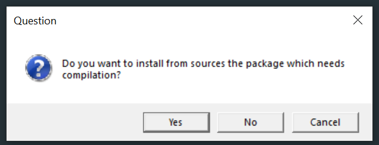

System dependencies
- Source R packages are not totally self-contained if external C libraries (or similar) are required to build it as they are not included in the
.tar.gzfile - To install such a package either download the binary package from CRAN (binary packages for Windows take about 1 day longer to appear after the new source version appears)/RSPM/package manager
- If you never want this problem always click “No” on this window

- If you never want this problem always click “No” on this window
- Or, install the required system dependencies on your computer first, e.g. you may see installation failures such as
> install.packages("openssl", type = "source")
* installing *source* package 'openssl' ...
** package 'openssl' successfully unpacked and MD5 sums checked
Using PKG_CFLAGS=
------------------------- ANTICONF ERROR ---------------------------
Configuration failed because openssl was not found. Try installing:
* deb: libssl-dev (Debian, Ubuntu, etc)
* rpm: openssl-devel (Fedora, CentOS, RHEL)
* csw: libssl_dev (Solaris)
* brew: openssl@1.1 (Mac OSX)
If openssl is already installed, check that 'pkg-config' is in your
PATH and PKG_CONFIG_PATH contains a openssl.pc file. If pkg-config
is unavailable you can set INCLUDE_DIR and LIB_DIR manually via:
R CMD INSTALL --configure-vars='INCLUDE_DIR=... LIB_DIR=...'
--------------------------------------------------------------------
ERROR: configuration failed for package 'openssl'
* removing '/usr/local/lib/R/site-library/openssl'- Check if a package name is mentioned in the error message. To install it use the following tools for your operating system
- Windows:
- macOS:
Install Command Line Tools, issue in the Terminal app
xcode-select --installMost dependencies are available using Homebrew, e.g.,
brew install ...
- Linux
Use the package manager with your distro, e.g.
sudo apt-get install ...